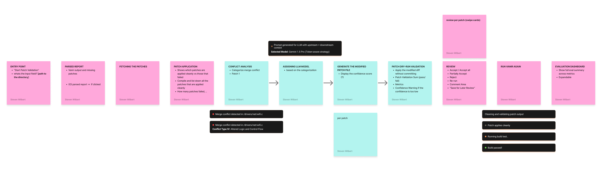
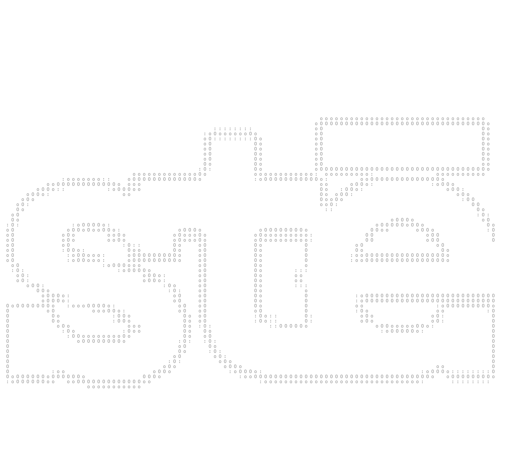

Google Android Security
A capstone project with Google automating Android security patch porting — using LLMs and agentic workflows to cut patch deployment time by 83%, from 30 minutes to 5 minutes per vulnerability.

Automating Android security patch porting with LLMs.
Google Android Security is a capstone project developed in partnership with Google, addressing the time-intensive and error-prone process of backporting security patches across the Android ecosystem. The system uses LLMs and agentic workflows to automate what engineers previously resolved by hand.
Built by team Ceteras — Carolyn Chen, Enrico Pratama, Eugene Wongso, and Theophila Setiawan — through the UW iSchool capstone program.
Security patch backporting is slow, manual, and inconsistent.
In the Android ecosystem, security patches developed upstream must be ported to dozens of downstream branches maintained by OEM partners. Tools like git cherry-pick handle simple cases, but many patches require manual resolution due to structural or API differences — a process that averages 30 minutes per vulnerability.
This manual effort slows patch deployment, increases the risk of inconsistent security coverage across devices, and places a heavy recurring burden on engineers across OEM partners at scale.
A four-stage automated pipeline.
The pipeline ingests Vanir vulnerability reports and runs them through a sequential pipeline — parsing, applying, fixing, and validating — so engineers receive a ready-to-merge patch rather than a conflict to resolve by hand.
Tested across 128 downstream versions.
Evaluated against 262 merge conflicts using a multi-dimensional metrics suite to measure patch quality and similarity to ground-truth human-resolved patches.
- Length metrics — Characters, tokens, lines
- Edit distance — Token-level edit distance
- Similarity — Normalized edit similarity, cosine similarity, CodeBERT similarity
- Manual handcheck — Human verification of patch correctness
Translating workflow into GUI.

Before designing any screens, I mapped the full workflow as ten distinct stages — from vulnerability ingestion through to patch validation. Laying them out sequentially made visible what the system was actually doing at each step, and where decisions were made by rules versus by the model.
Translating that into the GUI meant treating each stage as its own card in a stepper — scoped, legible, and unambiguous about what action, if any, the engineer needed to take.
Three principles behind every screen.

Tested against three principles. Then pivoted.
We ran usability testing sessions with Android security engineers, evaluating the GUI against the three design principles that guided every screen. The sessions confirmed what the design was doing right — and surfaced a more fundamental problem with the medium itself.
Good design is meeting people inside the workflows they already trust.
When I first took this role, I was genuinely excited because this would be the first time I'd work on the technical side of a project. I got to explore LLM prompting, feed context into the model to shape desired outputs for our AI tooling, and contribute to designing our evaluation metrics. Working closely with the same technology I'd been using every day, but now from the inside, was fascinating.
Early on, I designed a graphical user interface for our end users (Android security engineers), assuming a visual tool would make patch porting more approachable. But after gathering feedback, we pivoted to a command-line interface, because that was the environment they already lived in. Learning to build a CLI was a technical lift, but the bigger lesson was about design itself: good design isn't about introducing something better in the abstract; it's about meeting people inside the workflows they already trust. A polished GUI that pulls an engineer out of their terminal creates friction, no matter how well-crafted it looks.
This reframed how I think about AI tooling more broadly. When the underlying system is a black box, like an LLM making patch decisions, familiarity in the surrounding interface becomes a form of transparency. Engineers could read our tool's output, trace its reasoning, and intervene in the same environment where they'd normally review a diff. The CLI didn't just match their habits; it made the AI feel legible, like another tool in their pipeline rather than a separate system asking for their trust.
Research paper, further development, open sourcing.
The team is working toward publishing a research paper on the approach and results, continuing development of the pipeline, and open sourcing the tool so the broader Android security community can build on it.
For me, this project deepened my understanding of where design sits in systems-level engineering work — how to contribute meaningfully to a technically complex product without losing sight of the human judgment that still matters at each step.
bloom where
you're planted!
Sté is short for Steven — and it's a small wink at stay. It's the thread running through my work: design that invites people to stay engaged, art that holds attention, fragrances that linger long after the wearer leaves the room. Welcome. Sté with me a while.
